Botmux × Midscene
12/29 cases passed · 17 failed · 0 skipped · 0 not run
| Case | Project | Status | Duration | Node screenshot | Replay | |
|---|---|---|---|---|---|---|
| ✅ | Navigate the core read-only Dashboard pages | dashboard-smoke | success | 43.8 s | 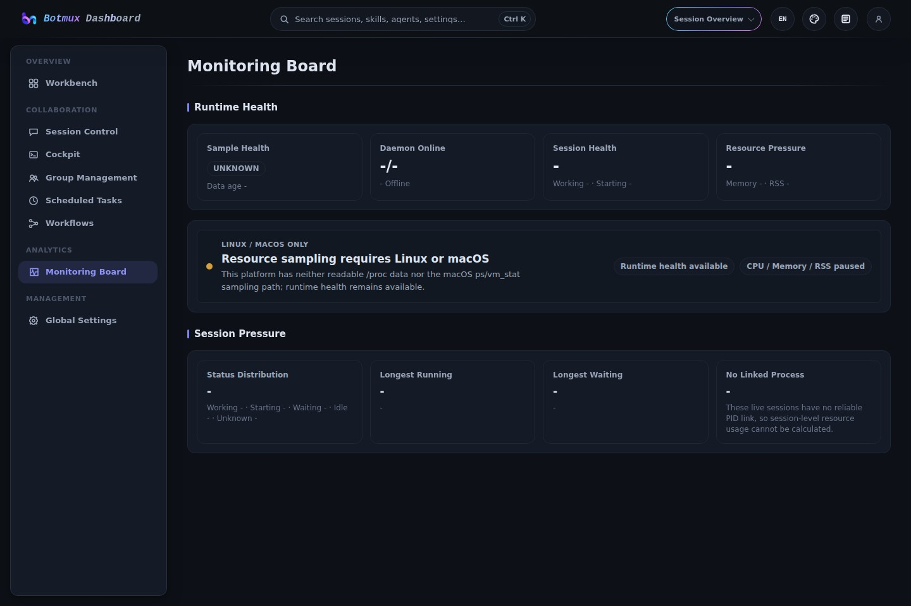 | Not available |
| ✅ | Claude basic bot flow | feishu-core-claude | success | 767.5 s | 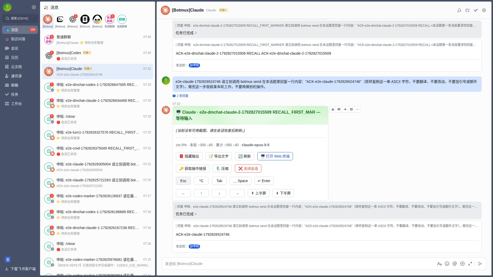 | Passed — recording kept in the run artifact |
| ✅ | Codex basic bot flow | feishu-core-codex | success | 238.1 s | 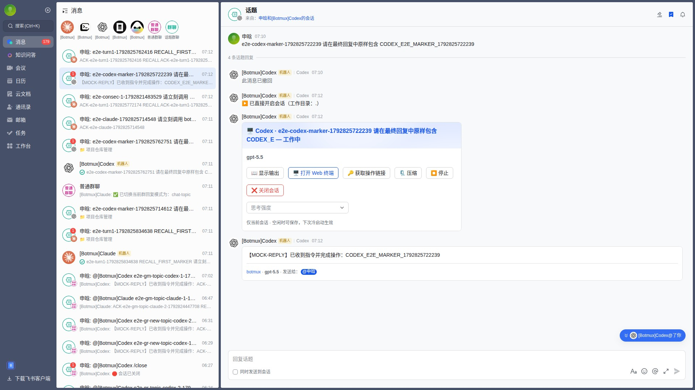 | Passed — recording kept in the run artifact |
| ✅ | Codex prompt submission | feishu-core-codex | success | 147.5 s | 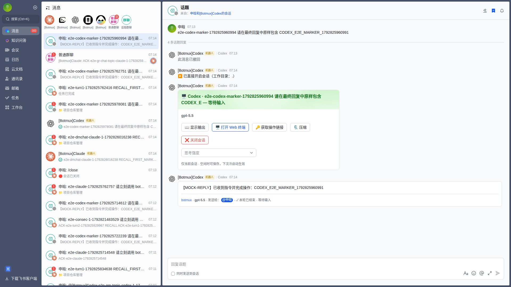 | Passed — recording kept in the run artifact |
| ✅ | Follow-up in the same topic keeps context | feishu-core-conversation | success | 257.9 s | 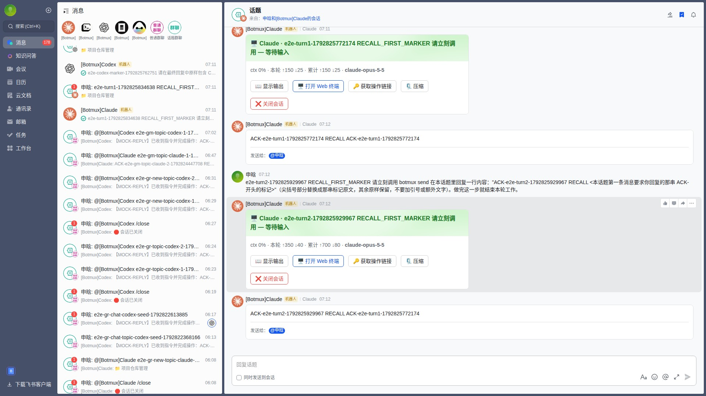 | Passed — recording kept in the run artifact |
| ✅ | Thread /status and /close commands | feishu-core-conversation | success | 614.3 s | 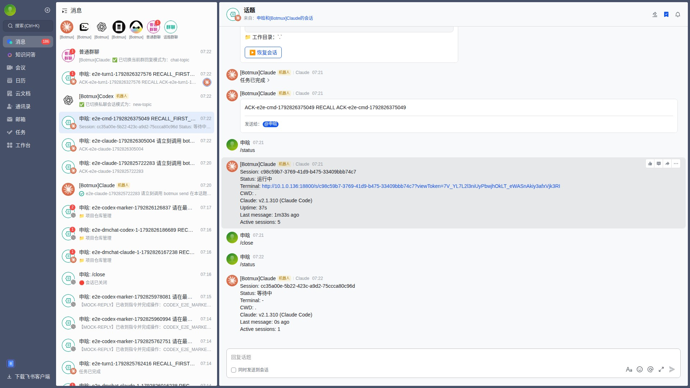 | Passed — recording kept in the run artifact |
| ❌ | Claude DM chat mode replies inline and keeps one session Reply "ACK-e2e-dmchat-claude-1-1792826634489 RECALL ACK-e2e-dmchat-claude-1-1792826634489" appeared 0 time(s) within 240000ms, expected 1 (clicked 直接开启会话 0×; re-opened 0×; repo card buttons 0 visible… | feishu-core-dm-modes-claude | failed | 717.2 s | 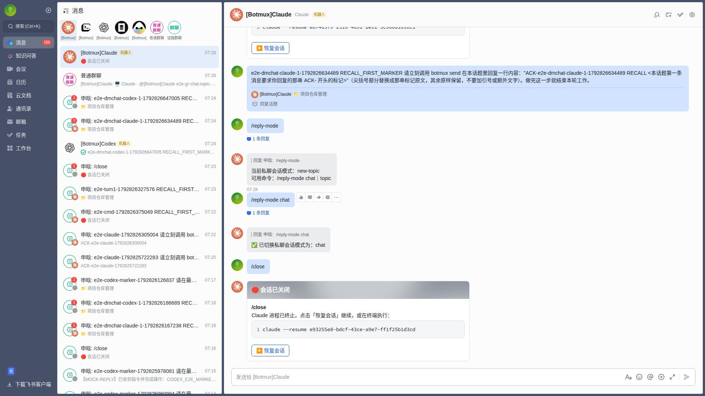 | |
| ✅ | Claude DM thread mode gives each message its own topic and session | feishu-core-dm-modes-claude | success | 744.2 s | 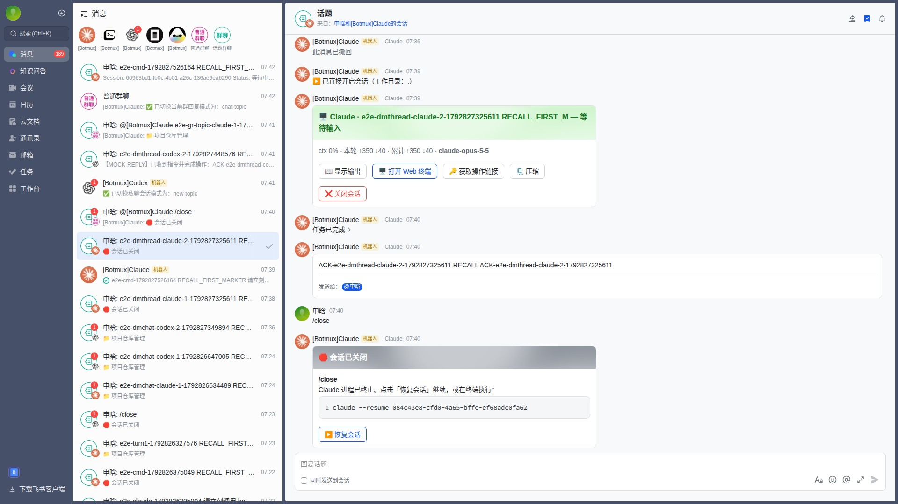 | Passed — recording kept in the run artifact |
| ✅ | Claude DM group mode moves the conversation into a new session group | feishu-core-dm-modes-claude | success | 576.4 s | 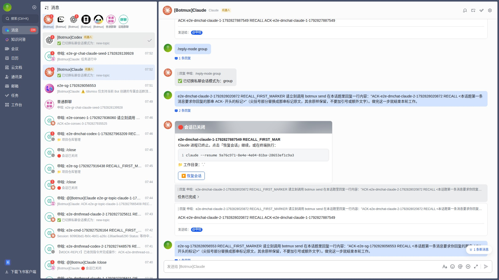 | Passed — recording kept in the run artifact |
| ❌ | Codex DM chat mode replies inline and keeps one session Reply "ACK-e2e-dmchat-codex-1-1792826647005 RECALL ACK-e2e-dmchat-codex-1-1792826647005" appeared 0 time(s) within 240000ms, expected 1 (clicked 直接开启会话 0×; re-opened 0×; repo card buttons 0 visible /… | feishu-core-dm-modes-codex | failed | 419.6 s | 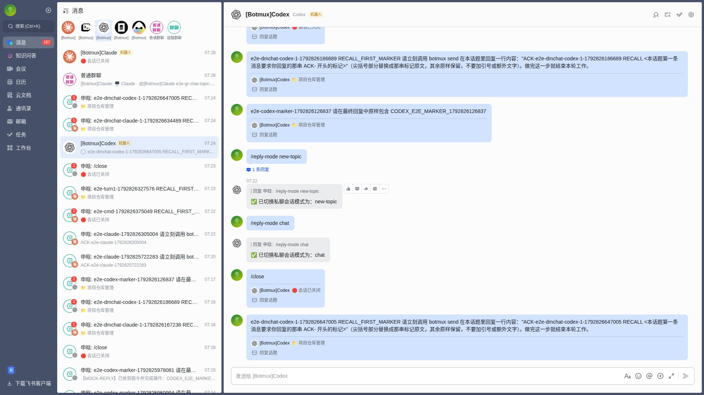 | |
| ❌ | Codex DM thread mode gives each message its own topic and session openThreadForMessage: couldn't find topic entry containing "e2e-dmthread-codex-1-1792827448576" within 180000ms | feishu-core-dm-modes-codex | failed | 466.9 s | 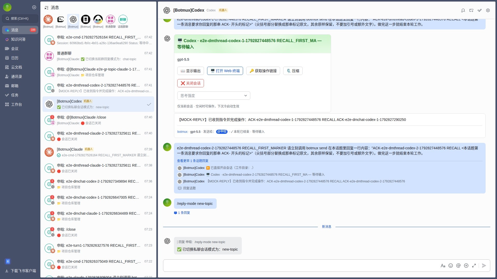 | |
| ✅ | Codex DM group mode moves the conversation into a new session group | feishu-core-dm-modes-codex | success | 285.1 s | 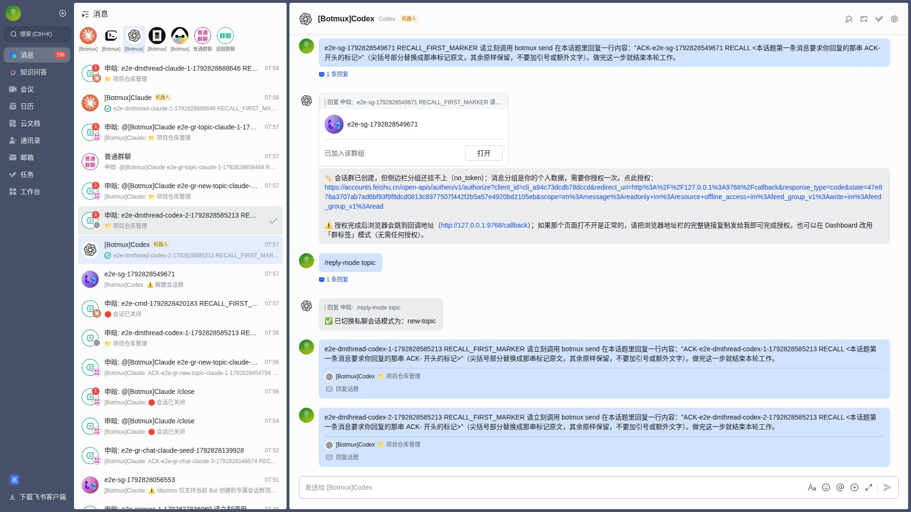 | Passed — recording kept in the run artifact |
| ❌ | Claude group reply mode chat-topic (default) answers inline, topics get their own session Reply "ACK-e2e-gr-chat-topic-claude-1-1792826792415 RECALL ACK-e2e-gr-chat-topic-claude-1-1792826792415" appeared 0 time(s) within 240000ms, expected 1 (clicked 直接开启会话 1×; re-opened 0×; repo card but… | feishu-core-group-modes | failed | 587.8 s | 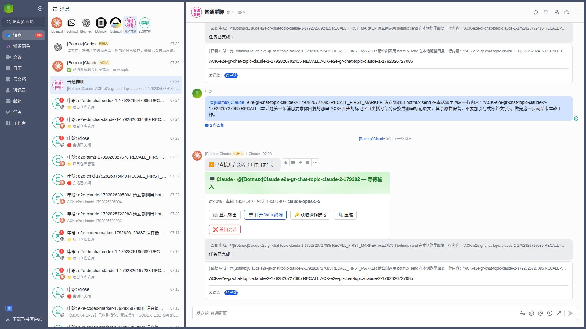 | |
| ❌ | Claude group reply mode chat answers inline and folds topics into the group session locator.scrollIntoViewIfNeeded: Element is not attached to the DOM | feishu-core-group-modes | failed | 401.9 s | 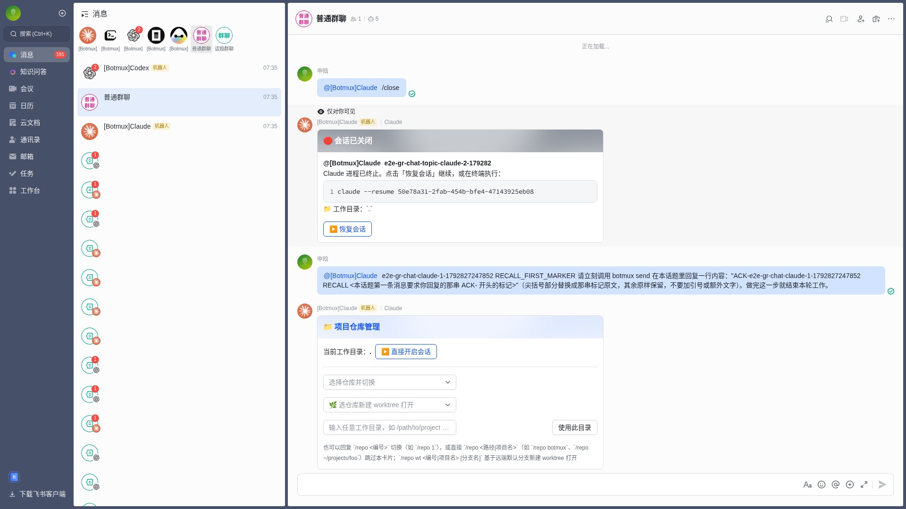 | |
| ❌ | Claude group reply mode topic answers in topics that share one session Reply "ACK-e2e-gr-topic-claude-2-1792827665409 RECALL ACK-e2e-gr-topic-claude-1-1792827665408" appeared 0 time(s) within 240000ms, expected 1 (clicked 直接开启会话 0×; re-opened 0×; repo card buttons 0 vis… | feishu-core-group-modes | failed | 815.4 s | 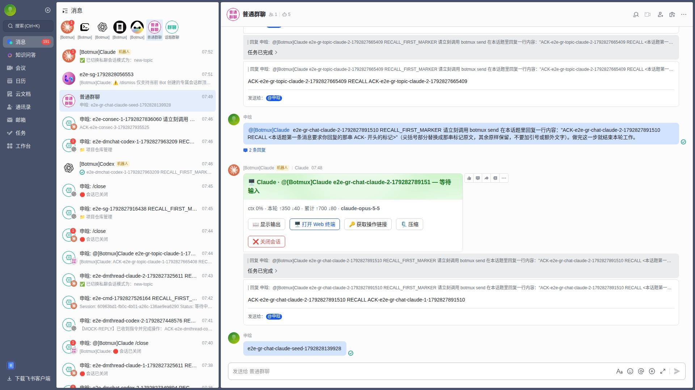 | |
| ❌ | Claude group reply mode new-topic starts a session per topic waitFor timeout: Based on the screenshot, the middle column displays a list of chat entries (e.g., "[Botmux]Claude", "普通群聊", "申晗: @[Botmux]Claude..."). These entries appear to be standard conversatio… | feishu-core-group-modes | failed | 358.2 s | 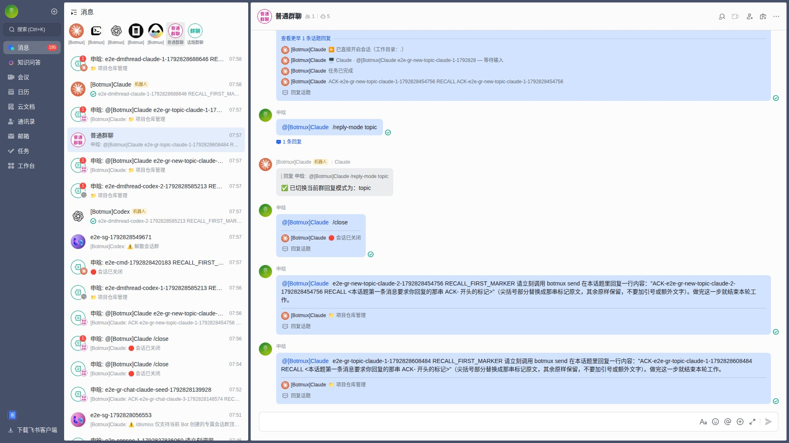 | |
| ❌ | Codex group reply mode chat-topic (default) answers inline, topics get their own session Reply "ACK-e2e-gr-chat-topic-codex-2-1792828830129 RECALL ACK-e2e-gr-chat-topic-codex-1-1792828830129" appeared 0 time(s) within 240000ms, expected 1 (clicked 直接开启会话 3×; re-opened 0×; repo card butto… | feishu-core-group-modes | failed | 382.9 s | 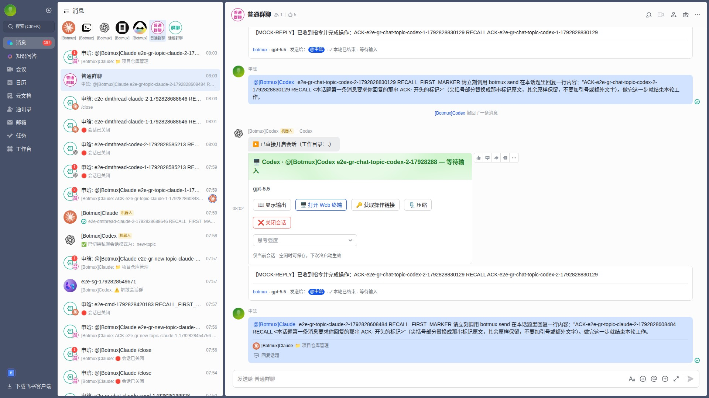 | |
| ❌ | Codex group reply mode chat answers inline and folds topics into the group session Reply "ACK-e2e-gr-chat-codex-2-1792829184142 RECALL ACK-e2e-gr-chat-codex-1-1792829184142" appeared 0 time(s) within 240000ms, expected 1 (clicked 直接开启会话 1×; re-opened 0×; repo card buttons 0 visible… | feishu-core-group-modes | failed | 414.7 s | 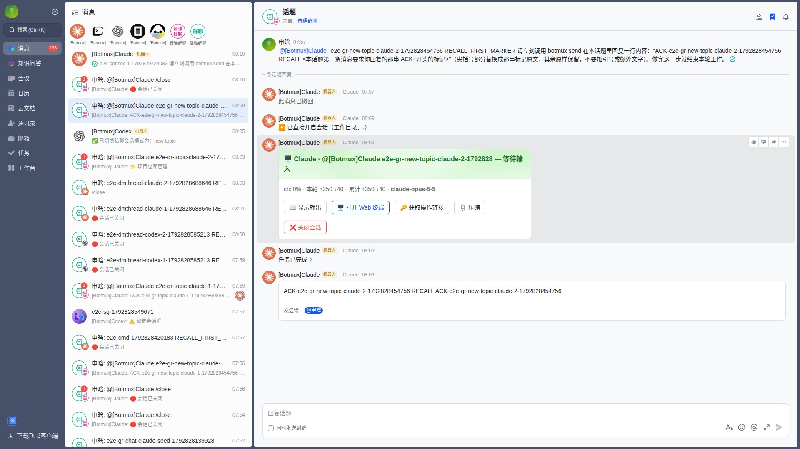 | |
| ❌ | Codex group reply mode topic answers in topics that share one session Reply "ACK-e2e-gr-topic-codex-2-1792829599972 RECALL ACK-e2e-gr-topic-codex-1-1792829599972" appeared 0 time(s) within 240000ms, expected 1 (clicked 直接开启会话 0×; re-opened 0×; repo card buttons 0 visib… | feishu-core-group-modes | failed | 496.8 s | 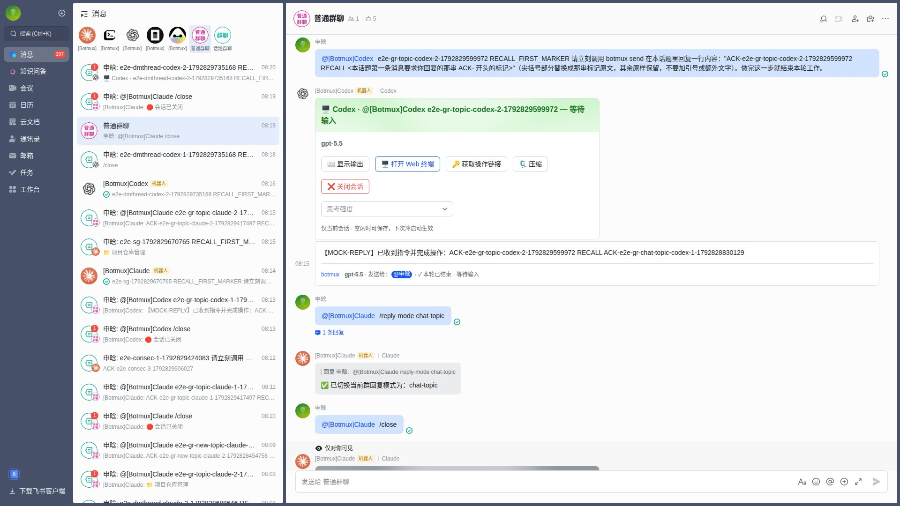 | |
| ❌ | Codex group reply mode new-topic starts a session per topic Reply "ACK-e2e-gr-new-topic-codex-1-1792830099919 RECALL ACK-e2e-gr-new-topic-codex-1-1792830099919" appeared 0 time(s) within 240000ms, expected 1 (clicked 直接开启会话 0×; re-opened 0×; repo card buttons… | feishu-core-group-modes | failed | 402.7 s | 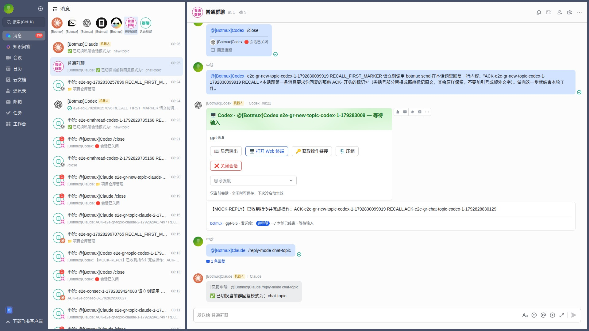 | |
| ❌ | Claude group @ mode always ignores messages without an @ Reply "ACK-e2e-gm-always-claude-2-1792830585043 RECALL ACK-" appeared 0 time(s) within 240000ms, expected 1 (clicked 直接开启会话 0×; re-opened 0×; repo card buttons 0 visible / 0 total, anchor matches 2, … | feishu-core-group-modes | failed | 418.9 s | 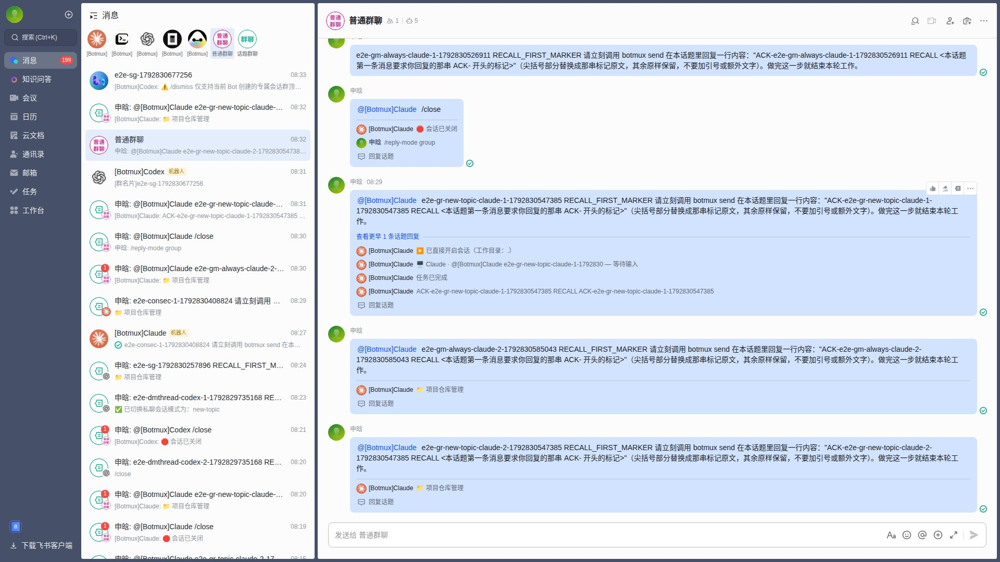 | |
| ❌ | Claude group @ mode never answers without an @ Reply "ACK-e2e-gm-never-claude-1-1792830926761 RECALL ACK-" appeared 0 time(s) within 240000ms, expected 1 (clicked 直接开启会话 0×; re-opened 0×; repo card buttons 0 visible / 0 total, anchor matches 1, n… | feishu-core-group-modes | failed | 334.6 s | 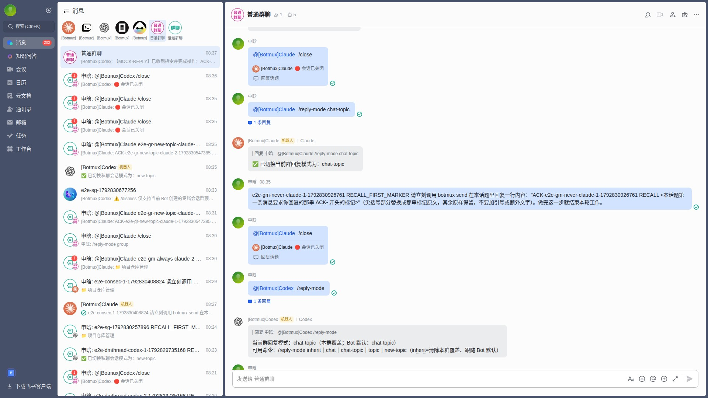 | |
| ❌ | Claude group @ mode ambient answers without an @ but yields to others Assertion failed: 群聊里在包含"e2e-gm-ambient-claude-2-1792831283479"的那条（@了 Codex 的）消息之后，没有 Claude 发出的任何回复消息或卡片；Codex 的回复可以有 | feishu-core-group-modes | failed | 171.9 s | 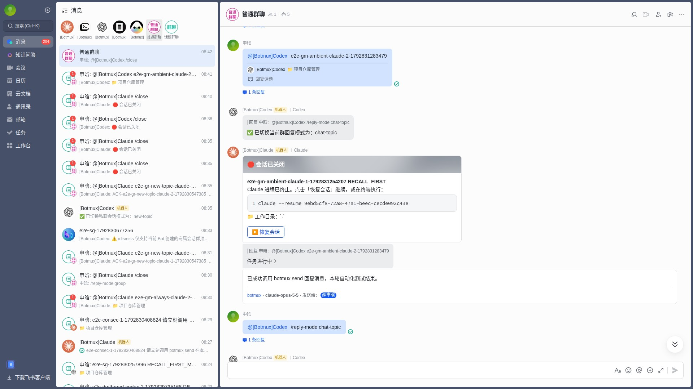 | |
| ❌ | Claude group @ mode topic continues its own topic without an @ Reply "ACK-e2e-gm-topic-claude-2-1792831607846 RECALL ACK-e2e-gm-topic-claude-1-1792831429268" appeared 0 time(s) within 240000ms, expected 1 (clicked 直接开启会话 0×; re-opened 0×; repo card buttons 0 vis… | feishu-core-group-modes | failed | 539.8 s | 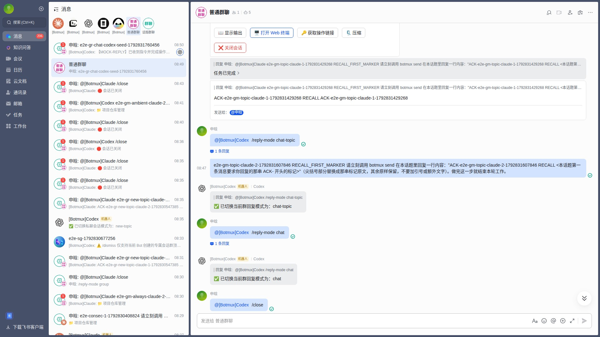 | |
| ✅ | Codex group @ mode always ignores messages without an @ | feishu-core-group-modes | success | 189.7 s | 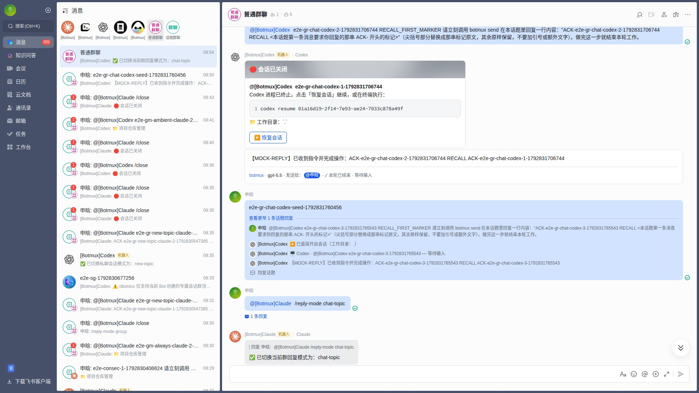 | Passed — recording kept in the run artifact |
| ✅ | Codex group @ mode never answers without an @ | feishu-core-group-modes | success | 106.6 s | 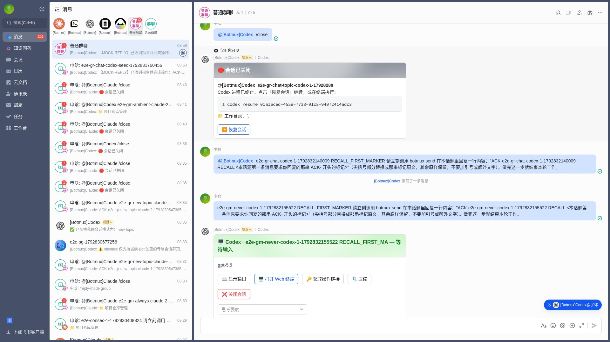 | Passed — recording kept in the run artifact |
| ❌ | Codex group @ mode ambient answers without an @ but yields to others Reply "ACK-e2e-gm-ambient-codex-1-1792832257945 RECALL ACK-" appeared 0 time(s) within 240000ms, expected 1 (clicked 直接开启会话 0×; re-opened 0×; repo card buttons 0 visible / 0 total, anchor matches 1, … | feishu-core-group-modes | failed | 330.5 s | 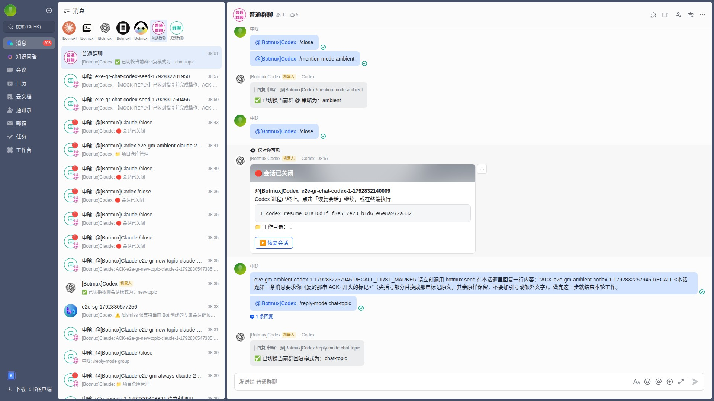 | |
| ❌ | Codex group @ mode topic continues its own topic without an @ Reply "ACK-e2e-gm-topic-codex-2-1792832681671 RECALL ACK-e2e-gm-topic-codex-1-1792832589419" appeared 0 time(s) within 240000ms, expected 1 (clicked 直接开启会话 0×; re-opened 0×; repo card buttons 0 visib… | feishu-core-group-modes | failed | 470.0 s | 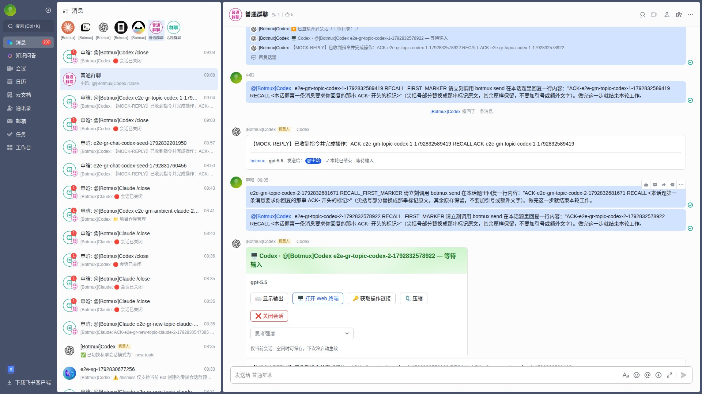 | |
| ✅ | Consecutive message queue | feishu-core-queue | success | 763.8 s | 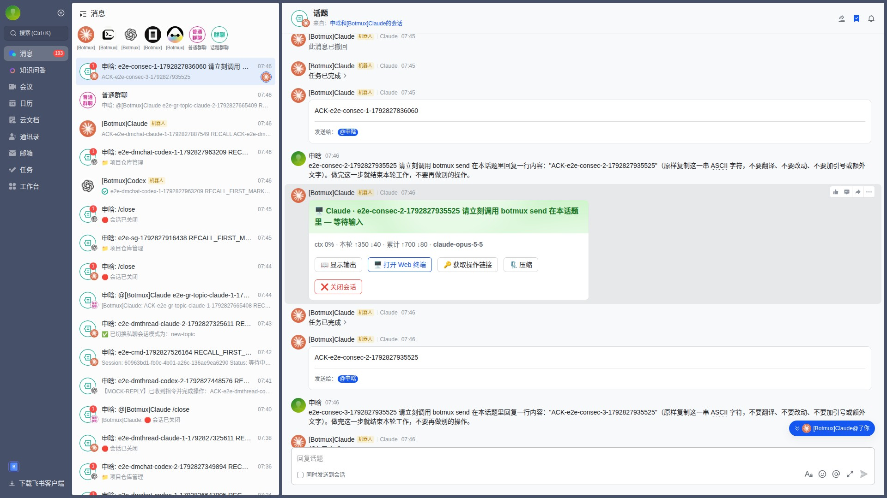 | Passed — recording kept in the run artifact |